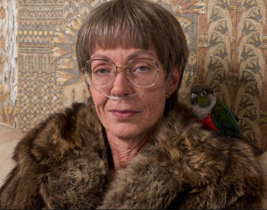
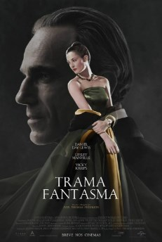

|
MELHOR ATRIZ COADJUVANTE: Allison Janney — Eu, Tonya |
|
|  |
Acompanhe a vida da ex-patinadora no gelo Tonya Harding. Durante a década de 1990, ela conseguiu superar sua infância pobre e emergir como campeã do Campeonato de Patinação no Gelo do Reino Unido e segunda colocada no campeonato mundial. Porém, ela ficou realmente conhecida quando seu marido, Jeff Gilloly, e dois ladrões tentaram incapacitar uma de suas concorrentes quebrando a perna dela durante as Olimpíadas de 1994. |
|
MELHOR FILME ESTRANGEIRO: Uma Mulher Fantástica — Chile |
|
| Marina e Orlando, vinte anos mais velho do que ela, amam-se longe dos olhares e fazem projectos futuros. Quando ele morre repentinamente, Marina é alvo da hostilidade dos familiares de Orlando: uma "santa família" que rejeita tudo o que Marina representa. Marina lutará com a mesma energia que dedica desde sempre para se tornar naquilo que é: uma mulher forte, corajosa, digna... Uma mulher fantástica! | |
|
MELHOR FIGURINO: Trama Fantasma |
|
|  | Nos anos 1950, Reynolds Woodcock é um renomado e confiante estilista que trabalha ao lado da irmã, Cyril, para vestir grandes nomes da realeza e da elite britânica. Sua inspiração surge através das mulheres que, constantemente, entram e saem de sua vida. Mas tudo muda quando ele conhece a forte e inteligente Alma, que vira sua musa e amante. |
|
MELHOR ROTEIRO ORIGINAL: Corra! — Jordan Peele |
|
| Um jovem fotógrafo descobre um segredo sombrio quando conhece os pais aparentemente amigáveis da sua namorada. | |
|
MELHOR ROTEIRO ADAPTADO: Me chame pelo seu nome — James Ivory |
|
| O jovem Elio está enfrentando outro verão preguiçoso na casa de seus pais na bela e lânguida paisagem italiana. Mas tudo muda com a chegada de Oliver, um acadêmico que veio ajudar a pesquisa de seu pai. |